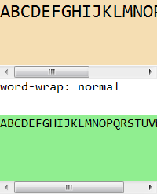

HF1014: 各浏览器对 TEXTAREA 元素的换行处理存在差异
标准参考
根据 HTML4.01 规范中的描述，TEXTAREA 元素创建一个多行的文本输入控件，用户端使用 TEXTAREA 元素的内容作为控件的初始值。
在 HTML5 草案中，TEXTAREA 元素加入了新的属性，wrap 属性是一个枚举类型属性，其拥有两种值：soft (缺省值)——浏览器会自动通过软回车 (CR+LF) 换行，软回车换行符不会提交到服务端；hard——浏览器会自动插入硬回车换行，插入的换行符会提交到服务端。
关于 TEXTAREA 元素的更多信息，请参考 HTML4.01 规范 17.7 The TEXTAREA element 和 HTML5 草案 4.10.13 The textarea element 中的内容。
问题描述
Opera 中 TEXTAREA 元素默认的 'word-wrap' 特性值为 'normal'，所以其 TEXTAREA 元素默认对于连续单词不会自动折行。
Firefox 中 TEXTAREA 元素的 wrap 属性设置为 hard 后，并不会按照 HTML5 草案中所述，将插入的换行符发送到服务端。
造成的影响
此问题会导致默认状态下的 TEXTAREA 元素内字符的换行处理在不同浏览器中存在差异。同时若 TEXTAREA 元素的 wrap 属性设置为 hard，则提交到服务端的 TEXTAREA 元素的数据也会在不同浏览器出现差异。
受影响的浏览器
| 所有浏览器 |
|---|
问题分析
HTML4.01 规范中并没有明确说明 TEXTAREA 元素在换行问题上究竟应如何处理，下面先观察各浏览器在默认状态下 TEXTAREA 元素的换行情况。
分析以下代码：textarea.html
<!DOCTYPE html>
<html>
<head>
<style>
* { margin:0; padding:0; border:0 none; font:24px Consolas; }
textarea { width:200px; height:100px; background:wheat; overflow:auto; resize:none; }
</style>
<script>
function $(id) { return document.getElementById(id); }
window.onload = function () {
if (!window.getComputedStyle) {
window.getComputedStyle = function ($target) {
return $target.currentStyle;
};
}
$('info').innerHTML = 'word-wrap: ' + getComputedStyle($('ta'), null).wordWrap;
document.forms[0].submit();
}
</script>
</head>
<body>
<form method="post" action="submit.php" target="submit">
<textarea id="ta" name="ta"> ABCDEFGHIJKLMNOPQRSTUVWXYZ</textarea>
</form>
<div id="info" style="font-size:16px;"></div>
<br />
<iframe name="submit" style="width:200px; height:100px;" frameborder="0"></iframe>
</body>
</html>
服务端：submit.php
<style>
* { margin:0; padding:0; font:16px Consolas; }
body { background:lightgreen; }
</style>
<pre id="p">
<?php
if (isset($_POST['ta'])) {
echo $_POST['ta'];
} else if (isset($_POST['ta1'])) {
echo $_POST['ta1'];
} else if (isset($_POST['ta2'])) {
echo $_POST['ta2'];
}
?>
</pre>
TEXTAREA 元素内包含了连续的英文字符，则在通常情况下，这 26 个字符之间无法断开。通过脚本获取到 TEXTAREA 元素 'word-wrap' 特性计算后的样式值。然后将 TEXTAREA 元素所在表单提交至服务端 submit.php，服务端原样返回接收到的参数内的数据。
这段代码在各浏览器中运行效果为：
| IE6 IE7 IE8 | Firefox Chrome Safari | Opera |
|---|---|---|
 |
 |
 |
- 在 IE6 IE7 IE8 中，虽然无法通过脚本检测到默认状态下 TEXTAREA 元素的 'word-wrap' 特性的值，但现象上 TEXTAREA 元素对于连续单词默认会自动折行；
- 在 Firefox Chrome Safari 中，TEXTAREA 元素默认的 'word-wrap'1 特性值为 'break-word'，即当遇到一个一般情况下不可截断的字符串时，浏览器会在必要时截断并在新行显示被截断内容。所以 TEXTAREA 元素对于连续单词默认会自动折行；
- 在 Opera 中，TEXTAREA 元素默认的 'word-wrap' 特性值为默认值 'normal'，即遵循默认的换行规则。所以对于连续的英文字符组成的单词，浏览器无法对其折行。
将 TEXTAREA 元素的 'word-wrap' 特性值设置为 'break-word' 即可在 Opera 中使 TEXTAREA 元素对于连续单词实现自动折行。
通过 IFRAME 内的返回的文字可以看到各浏览器默认情况下均不会将回车换行符提交到服务端，即 TEXTAREA 元素 wrap 属性默认值为 soft。
注 1: 关于 CSS3 草案中的 'word-wrap' 特性，请参见相关报告链接。
下面分析 TEXTAREA 元素的 wrap 属性对提交到服务端的数据的影响。
分析以下代码：textarea_wrap.html
<!DOCTYPE html>
<html>
<head>
<style>
* { margin:0; padding:0; border:0 none; font:24px Consolas; }
h1 { font-weight:bold; }
textarea { width:200px; height:100px; background:wheat; overflow:auto; resize:none; word-wrap:break-word; }
</style>
<script>
function $(id) { return document.getElementById(id); }
window.onload = function () {
if (!window.getComputedStyle) {
window.getComputedStyle = function ($target) {
return $target.currentStyle;
};
}
document.forms[0].submit();
document.forms[1].submit();
}
</script>
</head>
<body>
<h1>wrap="soft"</h1>
<form method="post" action="submit.php" target="submit1">
<textarea id="ta1" name="ta1" wrap="soft">ABCDEFGHIJKLMNOPQRSTUVWXYZ</textarea>
</form>
<br />
<iframe name="submit1" style="width:200px; height:100px;" frameborder="0"></iframe>
<br />
<br />
<h1>wrap="hard"</h1>
<form method="post" action="submit.php" target="submit2">
<textarea id="ta2" name="ta2" wrap="hard" cols="10">ABCDEFGHIJKLMNOPQRSTUVWXYZ</textarea>
</form>
<br />
<iframe name="submit2" style="width:200px; height:100px;" frameborder="0"></iframe>
</body>
</html>
两个 TEXTAREA 元素均设定了 word-wrap:break-word; 以保证在所有浏览器在均可以实现连续单词自动折行。它们的 wrap 属性分别为 soft 及 hard，将服务端返回的数据放置到 PRE 元素内以便查看其原始空白符结构。
这段代码在各浏览器中运行效果为：
| IE6 IE7 IE8 Chrome Safari Opera | Firefox |
|---|---|
 |
 |
可见，
- 在 IE6 IE7 IE8 Chrome Safari Opera 中，若 TEXTAREA 元素设定了 wrap="hard"，则浏览器按照 HTML5 草案中所述，将插入的换行符发送到了服务端；
- 在 Firefox 中，即使 TEXTAREA 元素设定了 wrap="hard"，而服务端返回的内容中却不包括换行符。
解决方案
若需要 TEXTAREA 元素对于连续单词实现自动折行，需要为 TEXTAREA 元素设定 word-wrap:break-word; 以消除各浏览器默认样式表的差异。
若不需要 TEXTAREA 元素对于连续单词实现自动折行，针对非 IE 浏览器，将 'word-wrap' 特性设置为 'normal' 即可。通过所有浏览器均支持通过为 TEXTAREA 元素设置 wrap="off" 达到相同的效果。off 值的含义参见 MSDN WRAP Attribute | wrap Property。
如：ta_res.html
Firefox 针对 wrap="hard" 无法将硬回车换行符发送到服务端的问题需要等待厂商修复。
参见
知识库
相关问题
测试环境
| 操作系统版本: | Windows 7 Ultimate build 7600 |
|---|---|
| 浏览器版本: |
IE6 IE7 IE8 Firefox 3.6.10 Chrome 7.0.517.17 dev Safari 5.0.2 Opera 10.62 |
| 测试页面: | textarea.html textarea_wrap.html ta_res.html |
| 本文更新时间: | 2010-09-26 |
关键字
TEXTAREA wrap hard soft off word-wrap break-word break 折行 文本框